愛媛封印の話2026
八鬮不動産が頒布した『ナンバープレートのヒミツ』に載っていない、愛媛封印のバリエーションを知っているので紹介。
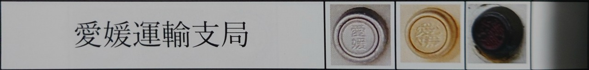
222ページより拝借。
このページでは便宜上、『左端』、『真ん中』、『右端』と呼ばせてもらう。
…ここで古い順に語れると良いのだが、GHQ占領下や、ハイフン無しについては良く知らないので語れない…。誰か情報下さい。
知っている範疇で古い順に語ります。
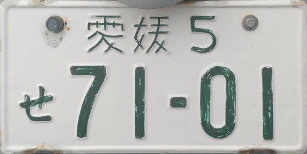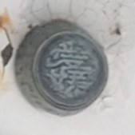
『右端』は(恐らく)真鍮製で、封印部分が朱く塗られているのが特徴。
現代に残っているものは大凡剥がれている。『ナンバープレートのヒミツ』の『右端』は綺麗に残っている。流石、走る個人情報
分類番号1ケタ時代に次の封印へと変わったと思われる。
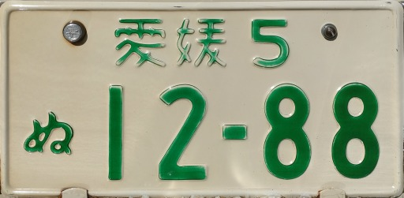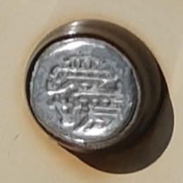
『右端』の次に付けられた物が、(恐らく)アルミ製のほぼ同形状の物。『右端』と較べると、封印の淵にエンボスが無いのが特徴。
便宜上『小径アルミ』と呼ぶ。
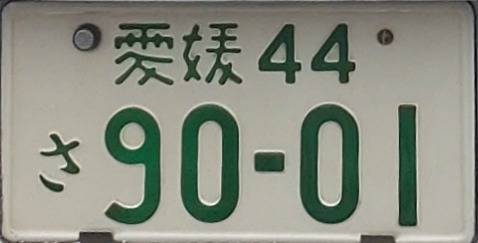
分類番号2ケタに成りたての頃に次の封印へと変わったと思われる。
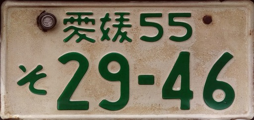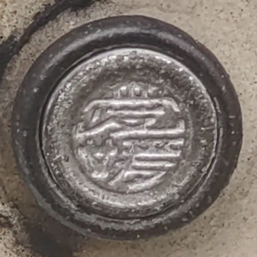
横からの写真が無いが、フレア形状のような形をしていた。
『右端』のような封印淵のエンボスが戻った。
この一台以外で見たことが無いのでかなり短命に終わったんだと思う。
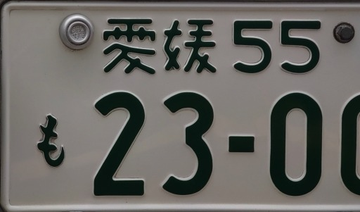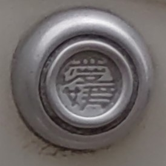
次の封印がこれ。
現行封印の大きさに近しい物になった。封印台の淵のなだらかなフィレットと、封印の淵のエンボスが特徴。
現代でも残ってる車には残っている。伊予鉄の10-65はコレ。
80年代(かなりアバウトだが…。)に次の封印へと変わったと思われる。
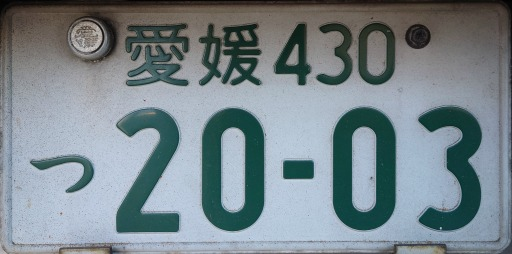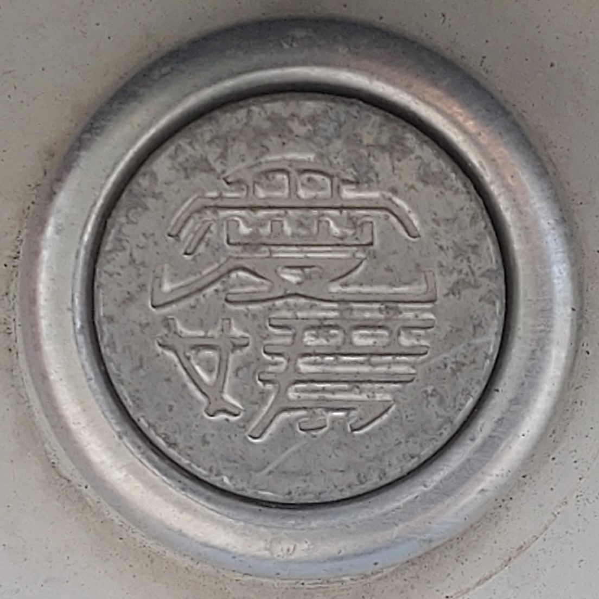
その次が『真ん中』
これは今(2026年)でも見ようと思えば見れる。町に居る旧愛媛は、おおよそこの封印。
新愛媛になってからも、暫くは使われていたっぽい。
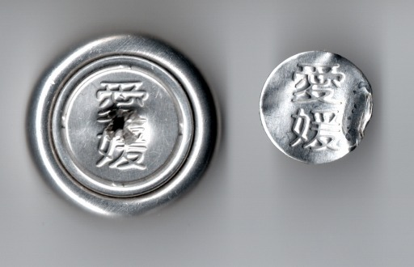
そして『左端』になる。
ﾀﾞｯｾー。
//嫌い過ぎて写真素材が無かったので無効になった封印からスキャン。